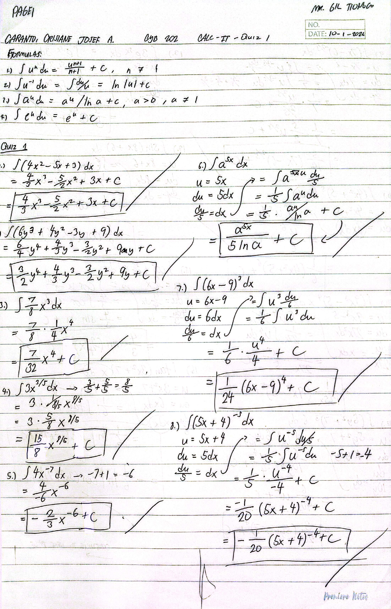
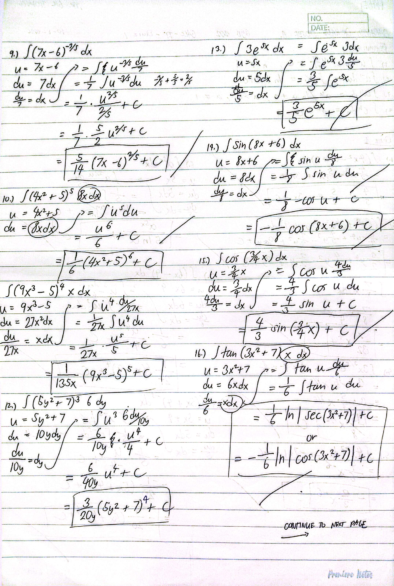
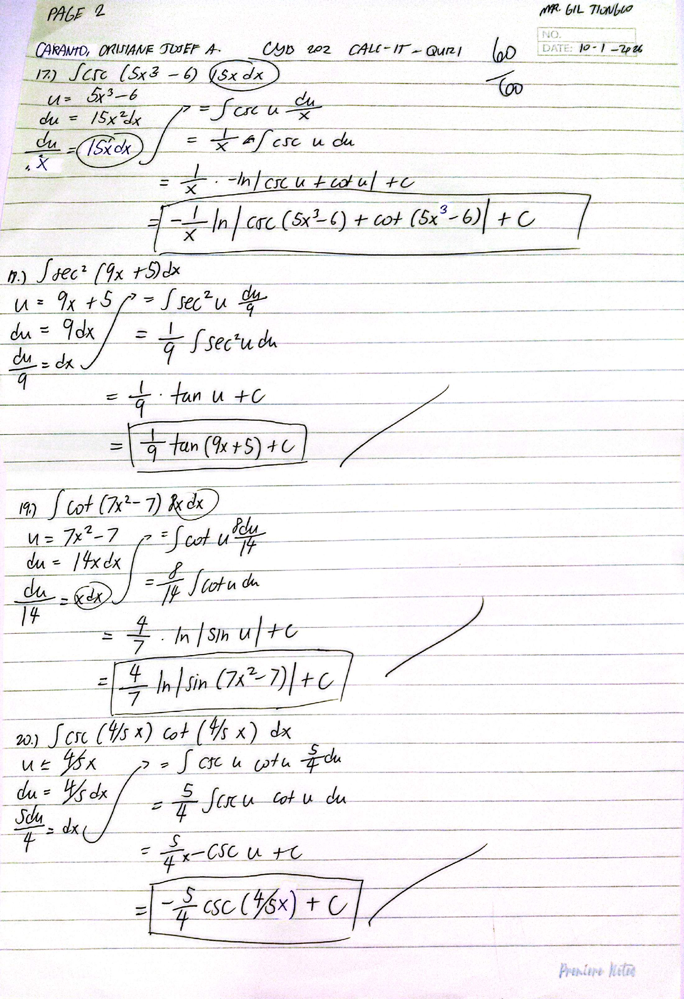

Finals: Quiz 1
Score: 60/60
Description
An culmination of my finals learning. The quiz covered integration concepts from polynomial functions to trigonometric functions and applications of all lessons from functions and differentiation.
Objectives
Reflection
With the quiz, I have considered myself proficient in understanding the application of integration rules in Calculus. Especially since polynomial, trigonometric, and e^x functions are the fundamentals of integral Calculus, assessing my skills in being able to apply them properly has not only showed me what I need to improve on, but also strengthened my knowledge. After this, I can say that I can do fundamental Calculus proficiently. From learning basic functions to differentiation to now integrals, I consider my learnings in Calculus very fun and I really hope that I can use them effectively in my next journey in Cybersecurity.